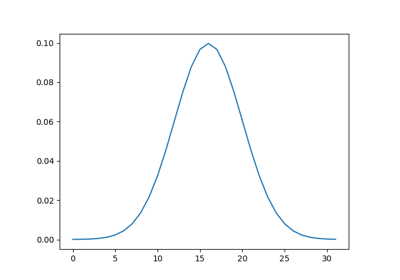
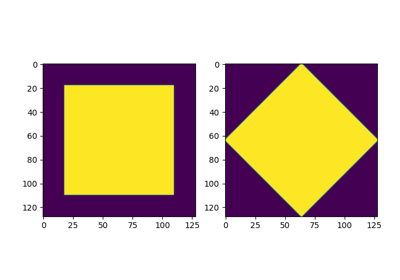
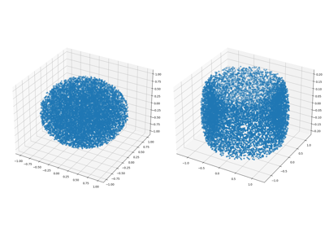
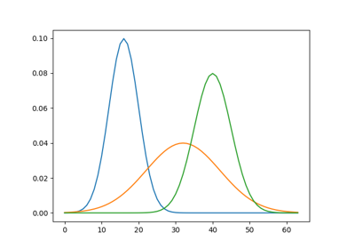
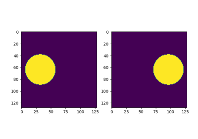

Examples
Below is a list of examples for various workflows using the MultiScaleOT library from python. A convenient way to try them is via Google colab.

1d Sparse Sinkhorn

2d Image Interpolation

3d Point clouds

1d Barycenter with Sinkhorn

2d Image Interpolation: Hellinger–Kantorovich distance
2d Image Interpolation: Hellinger--Kantorovich distance